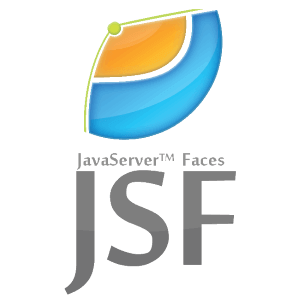
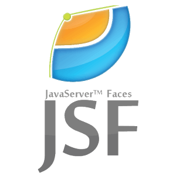
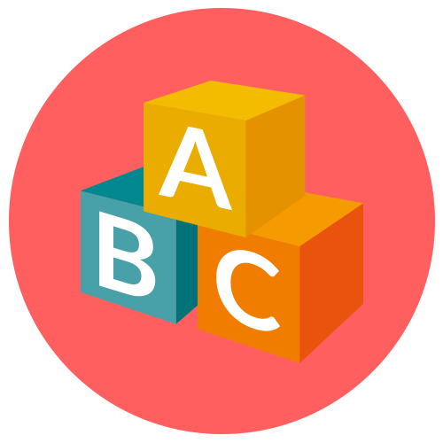

Emerson Ferreira da Silva
Carreira em desenvolvimento na área de programação, como programador
junior.
Formado em analise e desenvolvimento de sistemas pela
Universidade Uninove no ano de 2019. Possuo conhecimentos acadêmicos
e básicos em algumas linguagens de programação, frameworks, bibliotecas e
banco de dados.
-

-
Centro Universitario Nove de Julho
Curso: Análise e Desenvolvimento de Sistemas
Concluido - 06/2019
-
 



-
BRQ Programador Junior - Atual
Responsável por auxiliar no desenvolvimento de sistemas e procs, com a utilização da linguagem java, com framework Java Server Faces, com arquitetura awb3 (Bradesco), e banco de dados SQL.
BRQ Estagiario em Programação - 2018 a 2019
Responsável no periodo de 5 meses por auxiliar no desenvolvimento de sistemas em alta plataforma, com a utilização da linguagem Cobol.
Responsavel no periodo de 2 meses pelo desenvolvimento de prototipos funcionais utilizando a linguagem java e framework Java Server Faces, arquitetura awb3 (Bradesco).Sequoia Logistica Auxiliar de Almoxarifado - 2014 a 2018
Responsável pelo recebimento e conferência de entrada e saída dos produtos e notas fiscais através do sistema integrado (ERP WMS), além de atuar na organização de estoque físico e sistêmico, alimentando e desenvolvendo planilhas para controles internos, responsável também pela separação de ordem de trabalho e movimentação de estoque usando empilhadeira manual e elétrica.
-
- Digital Innovation One
- Introdução ao Git e Controle de Versões
- Programação para Internet com JavaScript
- Introdução ao GitHub e comandos essenciais para trabalhar em equipe
- Alura
- Java E JSF I: Sua Aplicação Web Com JSF2
- Java Parte 7: Trabalhando Com Java.IO
- Java Parte 6: Conhecendo o Java.UTIL
- Java Parte 5: Pacotes e Java.LANG
- Java Parte 4: Entendendo Exceções
- Java Parte 2: Introdução à Orientação a Objetos
- Java Parte 1: Primeiros Passos
- UML Introdução: Modelagem de Soluções
- Linux I: Conhecendo e Utilizando o Terminal
- Escola de Programadores
- Cobol com db2
- B7Web
- HTML e CSS
- GIT: Versionamento de código
- Javascript Básico
- NodeJS
- Jdev Treinamentos
- Lógica de programação e algoritmos
- Configuração do ambiente Java
- 
- Inglês - Técnico
- Espanhol - Técnico
- Português - Nátivo